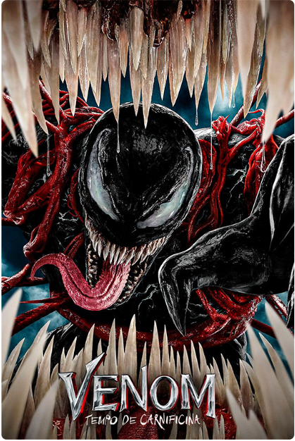

Venom: Tempo de Carnificina
Lançado em 2021 e dirigido por Andy Serkis, Venom: Tempo de Carnificina é a continuação do filme Venom, de 2018. A história segue o jornalista Eddie Brock, que continua convivendo com o simbionte alienígena Venom em uma relação cheia de conflitos e momentos cômicos. Enquanto tentam se adaptar à vida juntos, surge um novo inimigo: Cletus Kasady, um assassino em série que se torna o hospedeiro de outro simbionte, o perigoso Carnificina.
O filme mistura ação, humor e elementos de terror em um ritmo acelerado. A química entre Eddie e Venom é o ponto mais marcante da trama, com diálogos engraçados e situações absurdas que reforçam o tom de “parceria caótica” entre os dois. Já o vilão Carnificina se destaca pela sua brutalidade e pela atuação intensa de Woody Harrelson, que traz energia e loucura ao personagem.
Apesar de ter uma história mais simples e curta do que a maioria dos filmes de super-heróis, Venom: Tempo de Carnificina entrega boas cenas de ação e efeitos visuais de qualidade. O destaque vai para o confronto final entre Venom e Carnificina, que é dinâmico e visualmente impactante.
O filme não se propõe a ser profundo, mas cumpre o papel de divertir o público com muito humor, lutas e carisma dos protagonistas. É uma sequência que mantém o espírito do primeiro filme e prepara o terreno para futuras conexões com o universo do Homem-Aranha.
Em resumo, Venom: Tempo de Carnificina é um filme leve, divertido e cheio de ação, ideal para quem gosta de histórias de anti-heróis e quer ver o lado mais selvagem — e engraçado — do universo Marvel.
